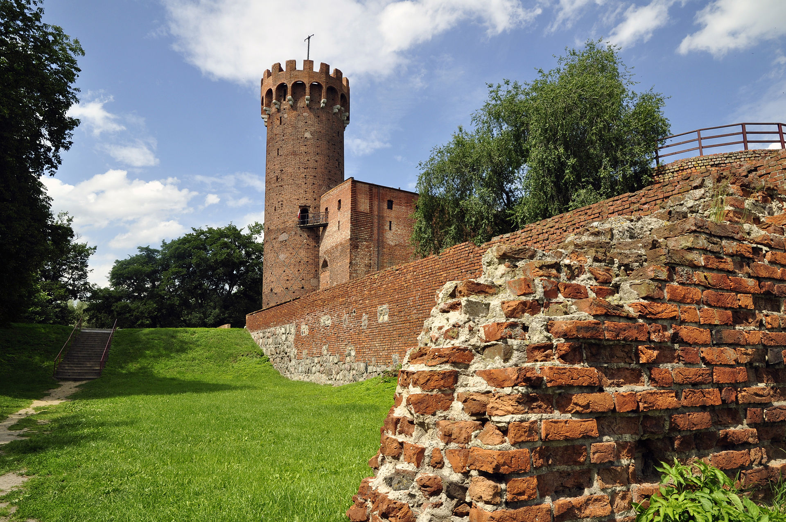

Zamek krzyżacki w Świeciu

Historia zamku
Zamek zbudowany został przez Zakon krzyżacki po roku 1335 z inicjatywy Güntera von Hohenstein. Powstał w nowym miejscu, nie związanym z grodem księcia Świętopełka II, który przypuszczalnie znajdował się wcześniej na przedzamczu. Było to założenie dwuczłonowe, składające się z otoczonego parchamem domu konwentu i przedzamcza. Od zachodu dostępu do zamku broniło ufortyfikowane miasto, w to miejsce przeniesione z pierwotnej lokalizacji na skarpie po 1338 roku, a więc w tym samym okresie kiedy wznoszono zamek. Był to jedyny zamek wodny na terenie państwa krzyżackiego. Fundamenty wskazują, że planowano zbudować zamek czteroskrzydłowy, ale zrealizowano jedynie dwa skrzydła. Charakterystyczną cechą zamku w Świeciu były cztery cylindryczne baszty w jego narożach. Był siedzibą komturów. Oblegany w 1410 roku. W czasie wojny trzynastoletniej przejściowo w rękach polskich. W latach 1461–1502 był własnością rady miejskiej Torunia. W latach 1508–1772 funkcjonował jako siedziba polskich starostów królewskich W 2 połowie XVI wieku przebudowany w stylu renesansowym przez kasztelana chełmińskiego Jerzego Konopackiego. Zniszczony w czasie wojen szwedzkich w XVII wieku, nie został odbudowany. Rozebrany częściowo przez władze pruskie po 1772 roku. Od 1859 r. rozpoczęto prace zabezpieczające ruinę, a częściowa odbudowa zamku nastąpiła po II wojnie światowej. Od 1875 r. aż do I wojny światowej zamek znajdował się pod administracją władz budowlanych (Königliche Strobauverwaltung). W tym czasie, tj. w latach 1877–1878, przeprowadzono wstępne prace zabezpieczające. W końcu XIX w. konserwator prowincji zachodniopruskiej, Johann Heine, wysunął propozycję przeprowadzenia konserwacji ruin zamku systemem Cohausena, w wyniku czego korony murów zostały pokryte betonowymi czapami. Na początku XX w. Konrad Steinbrecht przeprowadził inwentaryzację ruin zamku. Wynika z niej, że ocalałe do 2/3 wysokości północne skrzydło posiadało częściowo zachowaną narożną wieżę północno-wschodnią i całkowicie zachowaną (wyremontowaną), masywną wieżę północno-zachodnią. Zachowały się także pomieszczenia piwniczne: skrzydła wschodniego oraz częściowo – południowego i zachodniego. W 1898 r. na terenie zamku odbył się pierwszy zlot IV okręgu nadwiślańskiego Towarzystwa Gimnastycznego „Sokół”. Odtąd, aż do I wojny światowej, na obszarze przyzamkowym odbywały się regularnie ćwiczenia tego towarzystwa. W późniejszych latach wybudowano boisko sportowe, na którym w 1912 r. odbyły się zawody sportowe. W restauracji „Zamkowa”, położonej niedaleko murów zamkowych, znajdowała się sala do ćwiczeń gimnastycznych.
W okresie dwudziestolecia międzywojennego ruiny zamku znalazły się pod zarządem Wydziału Dróg Wodnych, przejęte z rąk Niemieckiej Inspekcji Wodnej jako własność państwowa. Z zachowanych murów jedynie wieża znajdowała się w dobrym stanie technicznym i służyła Wydziałowi Dróg Wodnych, podobnie jak za czasów pruskiego zaboru, do obserwacji Wisły i sygnalizowania nadchodzącego niebezpieczeństwa powodzi. Teren wokół ruin nie był wówczas ogrodzony i pozostałe mury nadal niszczały, dewastowane przez okoliczną ludność. Pomimo że wejścia były zamurowane, w zachowanych pomieszczeniach podziemi wieży wykryto nawet siedzibę i składnicę szajki złodziejskiej.
W czerwcu i sierpniu 2019 r. zamek został okradziony z cegieł przez nieznanych sprawców, w wyniku czego dewastacji uległ XIV-wieczny mur obronny.
Architektura zamku
Zamek wzniesiono na częściowo sztucznym nasypie (dla ochrony przed powodziami), na planie kwadratu o boku ok. 51 m. Brama wjazdowa znajdowała się w kurtynie zachodniej, z mostem nad fosą, który prowadził na przedzamcze. Zamek składał się z dwóch prostopadłych do siebie skrzydeł. Główne, północno-zachodnie, o szerokości ok. 13 m, stało równoległe no nurtu Wdy. Było podpiwniczone i miało trzy kondygnacje. Zawierało kaplicę oraz kapitularz lub refektarz. Dziedziniec o wymiarach 26 x 26 m otaczały krużganki. Zamek otoczony został murem obwodowym z czterema cylindrycznymi basztami w narożnikach, główna z nich o średnicy 10 m i wysokości 34 m, zakończona krenelażem, obecnie odchylona od pionu o 106 cm (najwyższa krzywa wieża w Polsce udostępniona turystom). Zamek miał strategiczne znaczenie, bowiem kontrolował ruch na Wiśle.